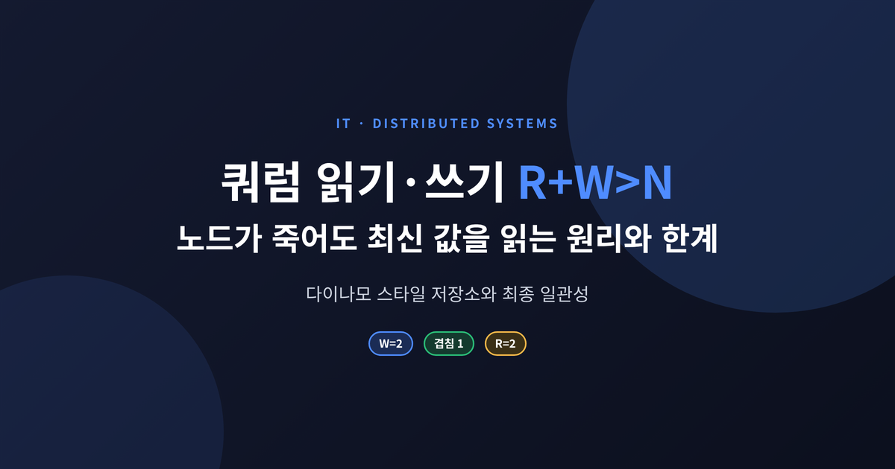
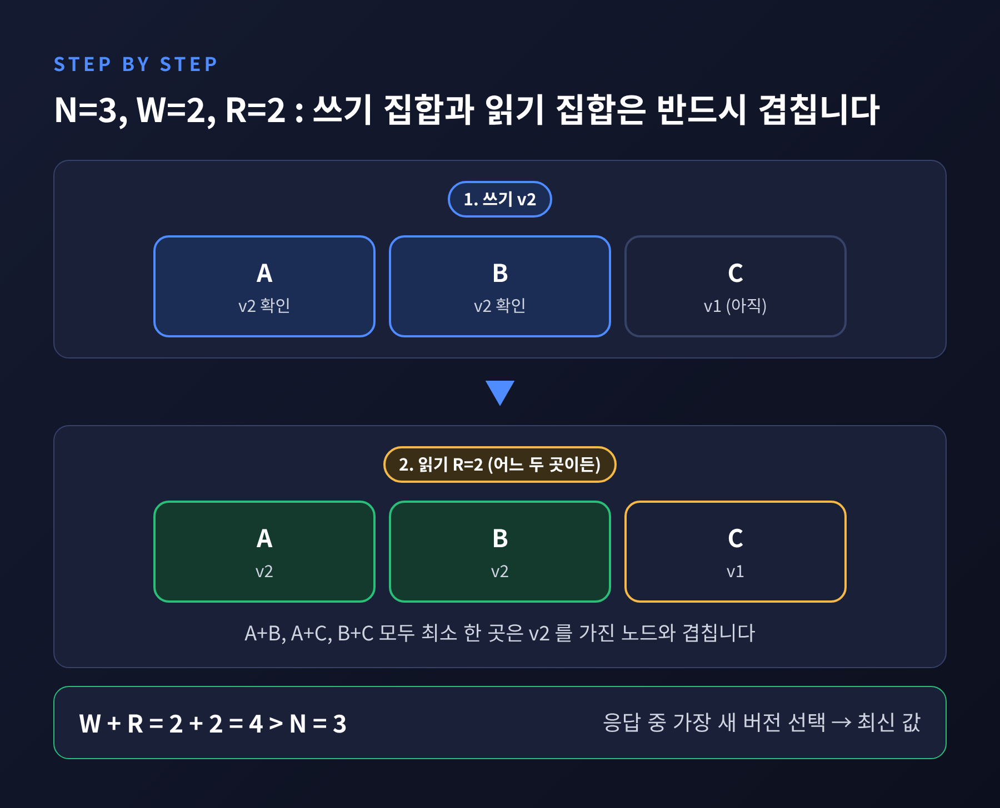
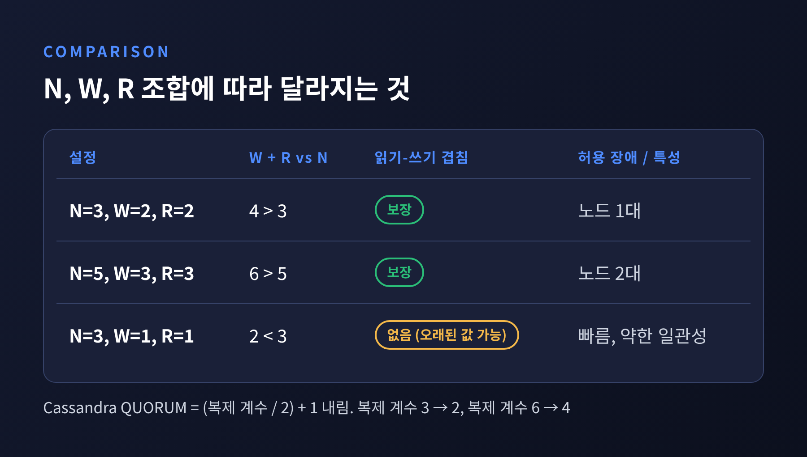
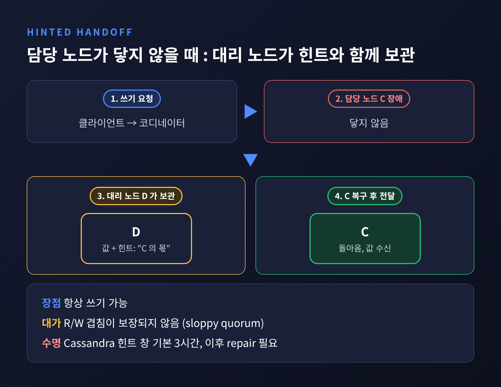
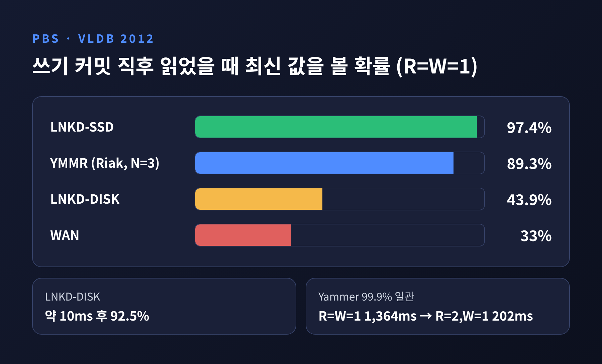
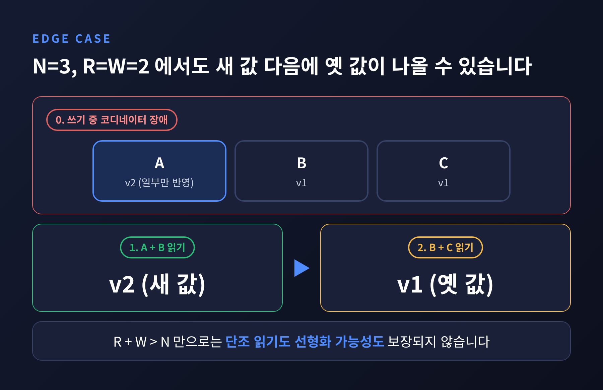

세 줄 요약 - 데이터를 N개 노드에 복제하고, W개에 쓰고 R개에서 읽을 때 R+W>N이면 읽기 집합과 쓰기 집합이 반드시 겹칩니다. - 그래서 N=3, R=2, W=2 구성은 노드 한 대가 죽어도 최신 값을 읽습니다. - 다만 쿼럼은 선형화 가능성을 보장하지 않으며, sloppy quorum에서는 겹침 자체가 깨집니다. 이것이 최종 일관성의 한계입니다.
이번 글에서는 쿼럼 읽기·쓰기가 어떻게 동작하는지 정리해 보겠습니다. Dynamo 논문에서 비롯된 다이나모 스타일 저장소(Cassandra, Riak 등)가 장애 속에서도 최신 값을 돌려주는 원리를 살펴봅니다. 이어서 그 약속이 어디까지 유효한지, 최종 일관성의 한계는 무엇인지 짚어 보겠습니다.
N은 한 키를 복제해 두는 노드의 수입니다. W는 쓰기가 성공하려면 확인 응답을 보내야 하는 최소 노드 수입니다. R은 읽기가 성공하려면 응답해야 하는 최소 노드 수입니다.
Dynamo 논문 기준의 전형적인 설정은 N=3, R=2, W=2입니다. 데이터가 세 곳에 복제되어 있고, 두 곳에 쓰고, 두 곳에서 읽는다는 뜻입니다. 핵심 조건은 하나입니다. R+W가 N보다 커야 합니다.

모든 복제본의 일치를 기다리는 방식은 느리고 장애에 약합니다. 쿼럼은 발상을 바꿉니다. 모두를 기다리지 않고, 겹치기만 하면 된다고 봅니다.
N=3, W=2, R=2라고 가정해 보겠습니다. 새 값을 쓰면 세 노드 중 두 곳이 확인 응답을 보내는 순간 쓰기는 성공으로 처리됩니다. 나머지 한 곳은 아직 옛 값을 가지고 있을 수 있습니다.
이제 읽기 차례입니다. 클라이언트는 세 노드 중 두 곳에서 응답을 받습니다. 두 곳이 어디든, 방금 쓰기를 확인한 두 노드와 최소 한 곳은 겹칩니다. 합이 4이고 N이 3이므로 피할 수 없는 구조입니다. 읽은 응답 가운데 가장 새 버전을 고르면 그것이 최신 값입니다.
이 구조의 장점은 장애 허용입니다. N=3, W=R=2에서는 노드 한 대가 죽어도 읽기와 쓰기가 모두 가능합니다. N=5, W=R=3으로 넓히면 합이 6이 되어 겹침을 유지하면서 두 대까지 견딥니다.
Apache Cassandra에서는 이를 QUORUM 일관성 수준으로 제공합니다. 쿼럼은 (복제 계수 / 2) + 1을 내림한 값입니다. 복제 계수가 3이면 쿼럼은 2이고 복제본 1개가 다운되어도 됩니다. 복제 계수가 6이면 쿼럼은 4이고 2개까지 허용됩니다. 쓰기는 일관성 수준과 무관하게 항상 모든 복제본으로 전송되며, 일관성 수준은 몇 개의 응답을 기다릴지만 정합니다.

R=W=1처럼 합이 N을 넘지 않는 설정을 부분 쿼럼이라 부릅니다. 빠르지만 오래된 값을 읽을 수 있습니다. 쿼럼의 본질은 일관성과 지연을 맞바꾸는 다이얼이라는 점입니다.
엄격한 쿼럼은 장애와 네트워크 파티션 상황에서 가용성을 해칠 수 있습니다. Dynamo는 선호 목록의 처음 N개 건강한 노드에서 읽기와 쓰기를 수행하는 방식을 택했습니다. 이를 sloppy quorum이라 부릅니다. 이 덕분에 Dynamo는 항상 쓰기가 가능하다는 성격을 얻었습니다.
원래 담당 노드가 닿지 않으면 다른 건강한 노드가 복제본을 대신 받습니다. 이때 원래 수신자가 누구인지 힌트를 함께 보관하고, 해당 노드가 돌아오면 넘겨줍니다. 이것이 hinted handoff입니다. Riak도 비슷하게, 대상 파티션이 실패하면 fallback 파티션으로 보내고 원래 노드가 복귀할 때까지 보관합니다.

그러나 여기에 대가가 있습니다. 쓰기 사본이 복제 집합 바깥의 임시 노드에 놓일 수 있어, R/W 겹침이 보장되지 않습니다. sloppy quorum이 켜진 상태에서는 R+W>N이어도 오래된 값이 나올 수 있다는 뜻입니다.
힌트에도 수명이 있습니다. Cassandra의 max_hint_window 기본값은 3시간입니다. 장애가 5시간 이어지면 앞의 3시간 분만 재생되고, 나머지 2시간 분의 쓰기는 누락됩니다. 이후에는 anti-entropy repair로 메워야 합니다. 힌트는 코디네이터에 저장될 뿐 복제되지 않아서, 전달 전에 코디네이터를 영구히 잃으면 사라지기도 합니다.
최종 일관성은 "언젠가는 같아진다"는 약속입니다. 이를 지키는 장치는 크게 셋입니다.
첫째는 읽기 복구(read repair)입니다. 읽는 도중 오래된 복제본을 발견하면 최신 값을 그 노드에 되써 줍니다. 한계도 분명합니다. 읽히는 키만 고쳐지므로, 아무도 읽지 않는 키는 계속 어긋나 있을 수 있습니다.
둘째는 앞서 본 hinted handoff로, 짧은 장애를 다룹니다.
셋째는 anti-entropy입니다. 복제본끼리 키 범위별 Merkle 트리(해시 트리)를 비교합니다. 루트 해시가 같으면 아무것도 보내지 않고, 다르면 트리를 내려가며 어긋난 하위 범위만 전송합니다. 디스크를 비운 채 교체된 노드처럼 영구 손실을 다루는 용도입니다.
Cassandra 문서는 이 기법들을 복제본 수렴을 위한 best-effort 방식이라고 설명합니다. 수렴은 노력의 결과이지 즉시 성립하는 보증이 아닙니다.
부분 쿼럼의 오래됨을 확률로 따져 본 연구가 있습니다. Bailis 등이 2012년 VLDB에 발표한 PBS(확률적 경계 오래됨) 논문입니다. 이 논문은 Cassandra의 기본값이 N=3, R=W=1이라고 지적하며, 사용자들이 최고 성능을 위해 R=W=1을 자주 쓴다고 보고합니다.
쓰기가 커밋된 직후에 읽었을 때 최신 값을 볼 확률은 환경에 따라 크게 달랐습니다. LinkedIn의 SSD 환경은 97.4%, 디스크 환경은 43.9%, Yammer(Riak, N=3)는 89.3%, 광역 네트워크(WAN) 설정은 33%였습니다. 디스크 환경은 약 10ms 뒤 92.5%까지 올라갔고, SSD 환경은 5ms 뒤 99.999%를 넘었습니다.

99.9% 확률로 일관된 읽기가 되기까지 걸리는 시간도 달랐습니다. SSD 환경은 1.85ms, 디스크 환경은 45.5ms였고, Yammer는 R=W=1에서 1,364ms였습니다. 같은 Yammer에서 R=2, W=1로 바꾸면 202ms로 줄었습니다.
지연과의 교환도 흥미롭습니다. Yammer에서 R=2, W=1은 엄격 쿼럼 중 가장 빠른 설정(W=1, R=3)보다 읽기와 쓰기를 합친 지연이 81.1% 낮았습니다. 이 논문은 최종 일관성 시스템이 수십 ms 안에 일관된 데이터를 자주 돌려준다고 요약합니다. 그러나 평균이 아니라 꼬리, 즉 환경에 따라 1초를 넘는 경우를 함께 보아야 합니다.
여기가 이 글의 핵심입니다. R+W>N만으로는 단조 읽기도, 선형화 가능성도 보장되지 않습니다.
세 번째 경우를 구체적으로 보겠습니다. N=3, R=W=2입니다. 불완전한 쓰기가 복제본 A에만 반영되었습니다. A와 B를 읽으면 새 값이 나옵니다. 그런데 그 직후 B와 C를 읽으면 옛 값이 나옵니다. 쿼럼 읽기 두 번이 새 값에서 옛 값으로 되돌아가는 셈입니다.

충돌 해소 방식도 한계가 됩니다. Dynamo는 벡터 클럭으로 인과 관계를 추적하고, 충돌하는 버전은 보존했다가 읽을 때 반환해 애플리케이션이 병합하게 합니다. 벡터 클럭 엔트리가 10개를 넘으면 가장 오래 갱신된 항목을 지우는데, 이렇게 크기를 묶으면 순서 정보를 잃을 수 있습니다. Cassandra는 last write wins, 즉 변경 타임스탬프가 가장 큰 쪽이 이기는 규칙을 씁니다. 시계가 어긋나면 결과도 어긋나므로 NTP 같은 시간 동기화가 필요합니다.
Dynamo의 장바구니 사례가 이 선택을 잘 보여 줍니다. 24시간 측정에서 요청의 99.94%는 단일 버전을 보았고, 두 버전은 0.00057%, 세 버전은 0.00047%, 네 버전은 0.00009%였습니다. 이 수치는 강의노트에서 확인한 것으로, 원문 논문과는 대조하지 못했습니다. 충돌이 드물다는 사실이 중요하지만, 있다는 사실을 설계가 받아들였다는 점이 더 중요합니다. "오래된 장바구니는 괜찮지만, 쓸 수 없는 장바구니는 매출을 잃는다"는 논리입니다.
참고로 이름이 비슷한 AWS의 DynamoDB는 벡터 클럭을 버리고 파티션별 Multi-Paxos 기반 리더 복제로 옮겨 갔습니다. Dynamo 논문과 DynamoDB는 다른 시스템입니다.
정리하면 이렇게 됩니다. 읽기가 많고 약간 오래된 값을 감수할 수 있다면 R을 낮춰 지연을 줄일 수 있습니다. 최신성이 중요하다면 QUORUM으로 읽고 쓰되, 그 보장이 선형화 가능성이 아님을 기억해야 합니다. 엄격한 순서나 조건부 갱신이 필요한 작업에는 쿼럼만으로 충분하지 않을 수 있습니다.
운영에서도 챙길 점이 있습니다. 힌트 창(기본 3시간)보다 길게 노드가 빠졌다면 repair를 실행하는 편이 안전합니다. 읽기 복구만 믿지 말고, 읽히지 않는 데이터를 위해 anti-entropy를 주기적으로 돌리는 방안을 검토해 보시길 권합니다.
끝으로 한 마디만 더 드리겠습니다.
쿼럼은 "모두 일치"가 아니라 "반드시 겹침"을 약속합니다.
겹침은 최신 값이 그 안에 있다는 보증이지, 모두가 같은 역사를 본다는 보증이 아닙니다. 노드가 죽어도 최신 값을 읽는다는 말은 맞습니다. 다만 어떤 조건에서 맞는지를 알고 쓰는 것, 그것이 이 구조를 제대로 다루는 첫걸음일 것입니다.